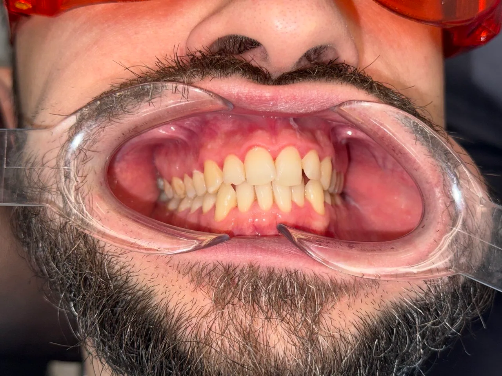
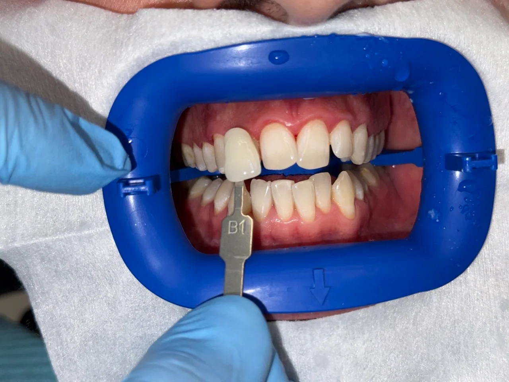

Гвиниашвили Елена Валериевна
Елена Валериевна Гвиниашвили: стоматолог-терапевт стоматологии «Вайтис» в Одинцово. Лечит кариес, каналы, в том числе под микроскопом, восстанавливает разрушенные зубы реставрацией, делает отбеливание.
Принимает на ул. Северной, 5 к4 (ЖК «Одинбург»), приём ежедневно с 9:00 до 21:00.

Кариес, каналы и восстановление зуба: лечение у одного врача.
Лечение начинается с осмотра и снимка: врач показывает, что с зубом, называет цену и только потом лечит. Обезболивание делают всегда, когда лечение может быть неприятным.
Сложные каналы Елена Валериевна лечит под микроскопом: так видно то, что не видно глазом, и чаще удаётся сохранить зуб. Разрушенный зуб восстанавливает пломбой или реставрацией, цвет подбирает под соседние зубы.
- 22года практики
- 0 ₽консультация с планом лечения
- 9–21приём без выходных
Услуги и цены
Терапия и восстановление зубов: чем занимается врач в клинике. Цены «от», точную стоимость врач называет после осмотра.
Имеются противопоказания. Необходима консультация специалиста.
Примеры работ
Работа Елены Валериевны: фото до и после. Нажмите на фото, чтобы увеличить.


Фото из архива клиники.
Образование
Высшее образование в Самарском государственном медицинском университете, интернатура по стоматологии общей практики, терапевтическая стоматология по программе дополнительного образования.
- 2015Высшее образование
СамГМУ, Самара
Специальность: Стоматология
Диплом № 106 324 384 027
- 2016Интернатура
Медицинский университет «Реавиз»
Специальность: Стоматология общей практики
Диплом № 106 324 030 802
- 2020Дополнительное профессиональное образование
Академия профессионального развития
Специальность: Стоматология терапевтическая
Диплом № 771 800 463 750
Отзывы пациентов
32 отзыва, в которых пациенты сами называют Елену Валериевну. Тексты дословно, имена без фамилий.
Пришла на чистку зубов по приятному предложению КТ + гигиена. Приятная стоматология, приятный администратор. Понравился визит у доктора Елены Валериевны Гвиниашвили, очень заботливо все посмотрела, рассказала и хорошо провела чистку. Спасибо большое.
Была на приёме у доктора Гвиниашвили Е. В. и осталась под огромным впечатлением. Давно не встречала такого сочетания профессионализма и человечного отношения. Врач успокоила, всё подробно рассказала и показала, так что страх перед лечением пропал сам собой. Работа выполнена идеально: быстро, качественно и, главное, абсолютно безболезненно!Огромное спасибо за ваш труд и здоровые зубы! Обязательно буду рекомендовать вас друзьям и близким!
 Мария26 сентября 2026 · Яндекс Карты
Мария26 сентября 2026 · Яндекс КартыПришла с проблемным зубом, все быстро пролечили, поставили временную пломбу и через время постоянную. Приятный сервис, доступные цены и очень хорошие врачи - отдельная благодарность Гвиниашвили Елене Валерьевне - провессионал своего дела и просто хороший внимательный человек, рекомендую.
Юлия7 сентября 2026 · Яндекс КартыСпасибо большое за оперативное и качественное лечение зубика) Никаких неприятных ощущений) Почти уснула) Гвиниашвили Елена Валериевна отличный специалист - спасибо большое))
Катерина7 сентября 2026 · Яндекс КартыКогда шёл в стоматологию оч боялся. Думал, что это страшнее контроше по алгебре, а на самом деле всё прошло на лайте! Было вообще не больно, комфортно и круто! Стоматолог, Гвиниашвили Елена Валерьевна вайбовая! Шарит за все подростковые мемы. Ассистент, София тоже легенда! Короче всё кайф! Ставлю 10000000/10. Лучшая подростковая клиника!
 Пациент28 июня 2026 · 2ГИС
Пациент28 июня 2026 · 2ГИСПосетила клинику по совету подружки. На прием попала к врачу Елене Валерьевне. Врач очень внимательная и аккуратная. По окончанию приема дала все необходимые рекомендации по уходу.
Анна4 июня 2026 · Яндекс КартыСпасибо большое врачу-стоматологу Елене Валерьевне Гвиниашвили которая восстановила мне зуб. Очень аккуратно и без болезненно.
Ангелина4 июня 2026 · Яндекс КартыСпасибо огромное доктору Елене Валерьевне Гвиниашвили за лечение это доктор от бога самый лучший из стоматологов в г Одинцово советую всем лечиться у нее
Пациент30 мая 2026 · Яндекс КартыГаиниашвили Елена Валерьевна , очень чуткий внимательный доктор , с самой легкой рукой , большое спасибо !!!
Елена27 мая 2026 · Яндекс КартыДобрый день, обратилась к врачу с зубной болью, Елена Валерьевна проконсультировала и дала рекомендации по лечению. Прием длился около 30 минут, никуда не торопилась. Также сделали компьютерную томографию.
Понравилось: Все понравилось, вернусь к данному врачу еще.
Выражаю благодарность доктору Елене Валерьевне за профессионализм! Всё очень понравилось!
Екатерина2 мая 2026 · 2ГИСДелала гигиену зубов, снимок и консультация врача, по акции. Все прошло бережно и аккуратно, врач Елена Валерьевна, сказала, я не знаю что Вы делаете, но продолжайте делать тоже самое) у вас все хорошо. Обсудила с врачом замену коронок и рассматриваю операцию по резекции верхушки корня. Просторная, светлая клиника, удобный вход с улицы, легко найти. Чисто. Аккуратно
Наталья26 апреля 2026 · Яндекс КартыЗаписался в вайтис на проф гигиену полости рта к Елене Валерьевной. Все очень понравилось, быстро, оперативно и самое главное качественно. Так же порекомендовали уход, нахвалили и составили план лечения по небольшому кариесу. Спасибо, вернусь сюда обязательно !)
Влад26 апреля 2026 · Яндекс КартыСегодня с подростком были на приеме у Елены Валерьевны ,очень понравился специалист,врач все подробно рассказала ,объяснила дальнейший план лечения .Все прошло отлично ,будем и дальше посещать эту клинику .Радует еще что находиться близко к дому .В самой клинике чисто ,персонал доброжелательный.Остались только хорошие впечатления.
Пациент18 апреля 2026 · Яндекс КартыБыла на проф гигиене, все отлично. Елена Валериевна прекрасный чуткий доктор. Спасибо
Валерия13 апреля 2026 · Яндекс КартыХочу выразить огромную благодарность замечательному стоматологу Гвиниашвили Елене Валериевне!🙏🏻 Я обратилась с тем что у меня начались сильные проблемы с зубами, одновременно сильно заболели все зубы. Елена Валериевна прекрасный специалист, очень приятный и доброжелательный человек, для меня всегда стресс обращаться в стоматологию, но благодаря чуткости и большому профессионализму Елены Валериевны все прошло очень приятно, легко, быстро и безболезненно, очень качественный результат, прекрасно полечили все зубы, я смогла наконец-то забыть что такое зубная боль! Спасибо Вам огромное 🙏🏻🙏🏻🙏🏻
А также хочу выразить огромную благодарность прекрасному стоматологу-хирургу Чилингаряну Акобу Арамаисовичу🙏🏻 Мне впервые так быстро и легко удалили зуб мудрости, всего за 2 минуты! Прием занял всего 5 минут😸 Акоб Арамаисович настоящий профессионал своего дела! Очень тактичный, прекрасный специалист, все быстро безболезненно и аккуратно сделал, Спасибо Вам огромное!🙏🏻🙏🏻🙏🏻
И еще спасибо большое прекрасным администраторам, очень приятные, заботливые и доброжелательные, очень приятно было обратиться в Стоматологию Вайтис, спасибо огромное 🙏🏻
Екатерина2 марта 2026 · Яндекс КартыБыл на чистке, все прошло достаточно безболезненно и быстро, хотя позже оказалось, что прошел час
Врач Елена Валерьевна хороший специалист, дала рекомендации по уходу за полостью рта, советую
Андрей16 февраля 2026 · Яндекс КартыБлагодарю врача клиники Гвиниашвили Елену за восстановление разрушенного зуба, за внимательный, добрый подход к пациенту. Дарить здоровье и надежду людям - что может быть прекраснее!
Анна31 января 2026 · 2ГИСБыли с дочерью впервые.В стоматологии "Вайтис" внутри идеальная чистота, вежливый администратор и никакой очереди😍🥰
Врач подробно проконсультировал, составил план лечения и ответил на все наши вопросы.
Все прошло абсолютно безболезненно и комфортно,дочь осталась довольная👍
Ещё подарили приятный предновогодний подарок 🎁
Огромная благодарность Елена Валерьевне💐💐💐
Анна21 декабря 2025 · Яндекс КартыЛегко и приятно удаляли молочные зубки с доктором Гвиниашвили Еленой Валерьевной. Чистая, уютная и красивая клиника.
Анна7 декабря 2025 · 2ГИСБыла 13.11.2025 на профессиональной гигиене полости рта у Гвиниашвили Елены Валерьевны ,все очень аккуратно и бережно! Без каких либо волнений ,осталась очень довольна результатом !
Валерия13 ноября 2025 · Яндекс КартыВ стоматологию "Вайтис" в первый раз пришли с младшим сыном, записались к доктору Мадине Дженетхановне. С первого момента почувствовали профессиональный подход и заботу о пациентах. Особенно порадовало современное оборудование, детям дается возможность выбрать и смотреть мультфильм во время лечения зуба. Сын ни разу не испугался и теперь с радостью посещает стоматологию "Вайтис". Ну а сегодня пришли со старшим ребёнком к доктору Елене Валериевне лечить кариес. Доктор показала нам проблемные места и предложила варианты лечения и судя по довольному лицу ребенка, лечение прошло безболезненно и комфортно.
Анастасия8 ноября 2025 · Яндекс КартыПрекрасная стоматология, вожу ребенка 10 лет регулярно. Лечимся у Елены Валерьевны. Рекомендую данную клинику.
Анна8 ноября 2025 · Яндекс КартыБольшое спасибо Елене Валерьевне Гвиниашвили за ее работу! Это было первое лечение зуба у дочки, а оно всегда формирует отношение к стоматологам в дальнейшем. Елена Валерьевна нашла долголетия к дочке, поболтала на отвлеченные темы, ребенок сразу расслабился) Все прошло быстро и безболезненно. Еще и слава подарили, ребенок счастлив!) Спасибо Елене Валерьевне и Вайтис❤️
Екатерина27 октября 2025 · Яндекс КартыХочу выразить благодарность стоматологу-терапевту Елене Валерьевне, за терпение и профессионализм. Сыну 7 лет, очень боялся удалять молочный зубик! Все прошло быстро и в очень теплой обстановке! Рекомендую врача 100%
Екатерина25 октября 2025 · Яндекс КартыОчень хорошая кленика. Врач Елена Валерьевна просто лучшая, врач от бога🫶🏻Рекомендую!!!
Екатерина13 октября 2025 · Яндекс КартыМне 9 лет,меня зовут Дима! Я очень доволен стоматологией ,в особенности Гвиниашвили Еленой Валерьевной❤️❤️❤️
Анна9 октября 2025 · Яндекс КартыБыли у врача Гвиниашвили Елены Валерьевны, все было прекрасно, ребенок 5 лет ничего не боялся и спокойно все время. Хороший и профессиональный подход ко всему!
Пациент4 октября 2025 · Яндекс КартыЗамечательное заведение, позвонил, быстро записали, сделали качественный осмотр, лечение в 2 этапа и соответственно оплата частями. Лечащий врач : Елена Валерьевна сделала всё в лучшем виде и дала все возможные рекомендации
Николай27 сентября 2025 · Яндекс КартыДелала чистку зубов.все прошло безболезненно.Доктор очень аккуратно все сделал,дал рекомендации.Спасибо большое Елене Валерьевне.
Татьяна18 сентября 2025 · Яндекс КартыПринимала Елена Валерьевна, очень понравилась, хорошо объяснила проблему, очень комфортная работа, осталась Рада визитом.
Ульяна12 июня 2025 · Яндекс КартыБыла у Гвиниашвили Елены на консультации. Прекрасный врач, полечила все что нужно, дала все необходимые консультации. В самой клинике очень уютно, чисто, приятно находиться :)
Спасибо :)
Диана29 мая 2025 · Яндекс КартыЗаписаться к Елене Валериевне
Записаться к врачуГде принимает. ул. Северная, 5 к4 (ЖК «Одинбург»). МЦД-1 «Одинцово», автобусы и маршрутки до остановки «Комбинат бытового обслуживания», дальше пешком по Северной. Приём ежедневно с 9:00 до 21:00.